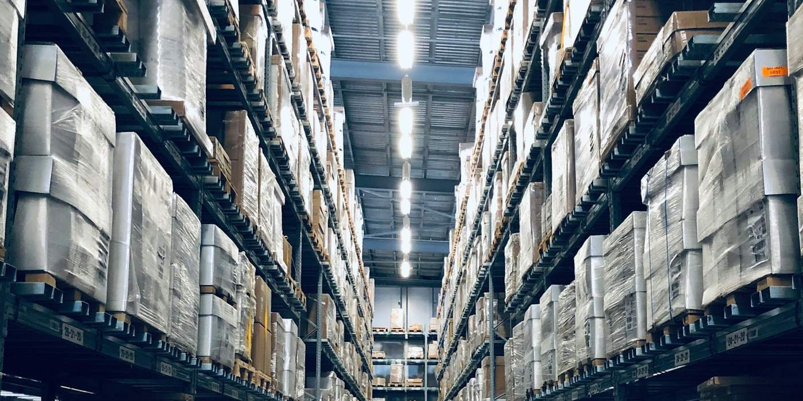

Precision
Every step from intake to delivery follows a defined standard that can be measured and traced.
Business-to-business supply of pre-owned Apple devices.


Siersz is a B2B supplier of pre-owned Apple devices, mainly iPhone. The pre-owned market is fragmented and inconsistent, and business buyers often face unreliable supply and uneven grading. We aim to improve that with dependable processes and clear communication.
[Add: year founded, headquarters, team background, main customer types]To give every device the chance to be useful again, and to make pre-owned a sensible choice rather than a compromise.
[Edit the vision to match the company]Every step from intake to delivery follows a defined standard that can be measured and traced.
Extending device lifespans and reducing electronic waste.
Long-term relationships built on consistency, transparency and delivery.
Siersz is a sister company of Sunstrike International Limited. The two are separate legal entities. Sunstrike was founded in 1997 and is a global distributor focused on second-life technology, with a presence on five continents and main hubs in Miami, London, Dubai, Hong Kong and India.
[Confirm the wording about the group and describe how Siersz and the group work together][List Siersz's own location, warehouses and offices. Delete anything that does not apply]